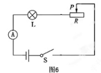
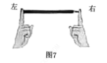
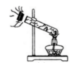
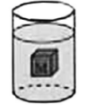
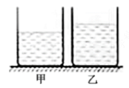

2019年北京市中考物理试题 · 选择题 第11、12、13、14、15题
11．（2分）如图所示的电路中，电源两端电压保持不变，当开关S闭合时，灯L正常发光。如果将滑动变阻器的滑片P向右滑动，则下列说法中正确的是（ ）

A．电流表的示数变大，灯L变亮
B．电流表的示数变大，灯L变暗
C．电流表的示数变小，灯L变亮
D．电流表的示数变小，灯L变暗
12．（2分）如图所示，两手的食指分别用沿水平方向的力顶在削好的铅笔两端，使铅笔保持水平静止。下列说法中正确的是（ ）

A．铅笔对左侧食指的压力较大
B．铅笔对右侧食指的压力较大
C．铅笔对右侧食指的压强较大
D．铅笔对两侧食指的压强大小相等
13．（2分）如图所示，在试管内装适量水，用橡胶塞塞住管口，将水加热至沸腾一段时间后，橡胶塞被推出，管口出现大量“白气”。此实验中，主要是通过做功改变物体内能的过程是（ ）

A．试管变热的过程
B．水变热的过程
C．水变成水蒸气的过程
D．水蒸气推出橡胶塞的同时变成“白气”的过程
14．（2分）如图所示，装有水的容器静止放在水平桌面上，正方体物块M悬浮在水中，其上表面与水面平行，则下列说法中正确的是（ ）

A．M上、下表面受到水压力的合力大于M受到的浮力
B．M上、下表面受到水压力的合力大小等于M受到的重力大小
C．M上表面受到水的压力大于M下表面受到水的压力
D．M上表面受到水的压力和M下表面受到水的压力是一对平衡力
15．（2分）两个完全相同的圆柱形容器静止放在水平桌面上，其中分别装有质量相等的水和酒精，液面高度如图所示。甲容器中液体对容器底部的压强和压力分别为p1和F1，乙容器中液体对容器底部的压强和压力分别为p2和F2；甲容器对桌面的压强和压力分别为p1′和F1’，乙容器对桌面的压强和压力分别为p2′和F2′，已知水的密度大于酒精的密度，则下列判断中正确的是（ ）

A．p1＜p2、F1＜F2B．p1＜p2、F1＝F2
C．p1'＝p2′、F1′＝F2′D．p1’＞p2′，F1′＞F2′